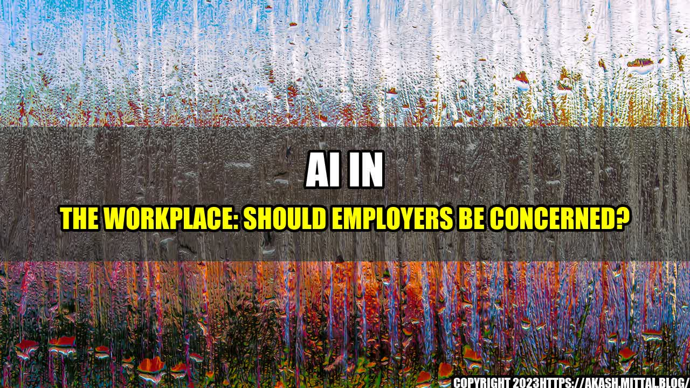

AI in the Workplace: Should Employers Be Concerned?
John walked into his office one Monday morning to find a sleek new laptop on his desk. As he opened it up, a message popped up on the screen, "Hello John, I am your new AI assistant, Alexa. How can I help you today?" John was taken aback. He had heard about AI in the workplace, but he never thought it would be this personal.
This is a common scenario in many workplaces today. AI assistants like Siri, Alexa, and Cortana are becoming more prevalent, and it's not just limited to personal assistants. In fact, AI is being used across many industries to make work more efficient and effective, but should employers be concerned?
A study by McKinsey Global Institute found that automation and AI could increase productivity by up to 1.4% annually, leading to an economic boost of over $13 trillion by 2030. This means that AI can help businesses save money and stay competitive in the ever-changing market.
Additionally, AI can help with recruitment, employee training and engagement, and even predicting employee burnout. For example, AI can analyze employee data to determine which employees may be at risk for burnout and provide recommendations for how to prevent it.
Concerns for Employers
While AI can certainly help improve productivity and employee engagement, there are also concerns employers need to think about. First and foremost, there is the fear that AI will replace human jobs. While some jobs may be automated, many will still require a human touch. Employers need to be mindful of this and ensure that employees are trained to work alongside AI.
Another concern is data privacy. AI relies on big data to function, and there is always a risk that sensitive employee data could be compromised. Employers need to make sure that they are transparent about what data is being collected and how it will be used.
Lastly, there is the ethical concern around AI. Employers need to make sure that their AI systems are not biased and are treating all employees fairly. This means ensuring that the AI is programmed with diverse data and that algorithms are regularly audited to check for biases.
Conclusion
As AI becomes more prevalent in the workplace, it's important for employers to consider both the benefits and the concerns. Here are three key takeaways to keep in mind:
- AI can improve productivity and employee engagement, but it's not a replacement for human workers.
- Employers need to prioritize data privacy and ensure that employees understand what data is being collected and how it will be used.
- AI systems need to be audited regularly to check for biases and ensure fair treatment of all employees.
Curated by Team Akash.Mittal.Blog
Share on Twitter Share on LinkedIn